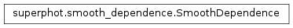

superphot.smooth_dependence module¶
Class Inheritance Diagram¶
Define a class for imposing smooth depndence of one quantity on others.
-
class
superphot.smooth_dependence.SmoothDependence(expression, parameters)[source]¶ Bases:
objectUtilities for imposing smooth depnedence of one quantity on others.
-
parameters¶ The parameters that depend smoothly on the variables. If dict-like or record array, indexed by the names of the parameters and containing the corresponding expansion coefficients. If array, the first dimension is assumed to contain the expansion coefficients.
Type: dict-like, record array or #-D array, #>=2
Examples
Find all terms combining up to x^3 and y^4, with only even powers of y allowed:
>>> from superphot import SmoothDependence >>> term_list = SmoothDependence.expand_expression('O3{x} * O2{y^2}')
Evaluate all terms in a polynomial of x and y of up to combined third order:
>>> from superphot import SmoothDependence >>> import numpy >>> term_values = SmoothDependence.evaluate_terms( >>> 'O3{x, y}', >>> x=numpy.arange(10.0), >>> y=numpy.arange(-10.0, 0.0) >>> )
Define two unnamed parameters smoothly depending on x:
- \(2.0 x + 4.0 x^2 + 6.0 x^3\)
- \(1.0 + 3.0 x + 5.0 x^2 + 7.0 x^3\)
and evaluate them for \(x \in \{0, 0.1, 0.2, 0.3, 0.4\}\):
>>> from superphot import SmoothDependence >>> import numpy >>> parameters = numpy.arange(8.0).reshape((4, 2)) >>> smooth = SmoothDependence('O3{x}', parameters) >>> param_values = smooth(x=numpy.arange(0.0, 0.45, 0.1))
Same as above, but this time name the parameters a and b:
>>> from superphot import SmoothDependence >>> import numpy >>> parameters = numpy.empty(4, dtype = [('a', float), ('b', float)]) >>> parameters['a'] = numpy.arange(0.0, 7.5, 2.0) >>> parameters['b'] = numpy.arange(1.0, 7.5, 2.0) >>> smooth = SmoothDependence('O3{x}', parameters) >>> param_values = smooth(x=numpy.arange(0.0, 0.45, 0.1))
-
__call__(**indep_var)[source]¶ Calculate the
parametersfor the given variable values.Parameters: **indep_var (1D arrays) – The values of the independent variables to evaluate the dependence at. Must all have the same length. Returns: The values of the parameters evaluated for the indepnedent variable values supplied. Return type: (same type as parametersattribute)
-
__init__(expression, parameters)[source]¶ Set-up a smooth depnednece of a set of parameters on a set of variables.
Parameters: - expression – See
expressionattribute. - parameters – See
parametersattribute.
Returns: None
- expression – See
-
classmethod
evaluate_terms(terms, **indep_var)[source]¶ Evaluate the given terms or a term expression for the given sources.
Parameters: - terms (str or [str]) – Either a single string giving an expression which is expanded to a list of terms using expand_expression(), or directly a list of terms to evaluate.
- **indep_var (1D numpy array) – The values of the independent variables involved in terms. The argument names must match the names used in terms.
Returns: The values of the terms for each entry in indep_var. Each column contains a different term.
Return type: 2D numpy array
-